Power steering link Assassin (4WD) decomposition |
| 1. Steering column hole cover SUB-ASSY No.1 |
Remove the No. 1 steering column cover.
| 2. Power Steering Rack Housing Heat Insulator removes |
Remove the two bolts and remove the heat insulator from the steering link asser.
| 3. Purtive feed tube Assemble |
Remove the two bolts and separate the clamp.
| 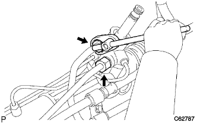 |
Use the Union Nut Wresten 19 to remove the pressure feed tube ASSY.
| 4. Remove the steering left turning pressure tube |
Use the Union Nut wrench 12 to remove the Left Turn pressure tube.
| 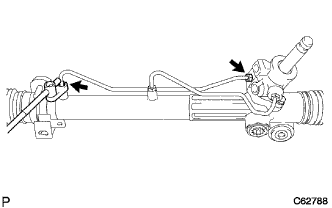 |
Remove the two O -rings from the light turn pressure tube.
| 5. Remove the steering light turn pressure tube |
| 6. Power steering link Assembly fixed |
| 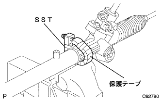 |
Use a SST with a protective tape to fix the steering link asser to the vise.
| 7. Tie rod end sub-assy LH removed |
Mark the rack end and the tie rod end LH.
 |
Loosen the rock nut and remove the tie rod end LH and rock nuts.
| 8. Tie rod end sub-assy RH is removed |
| 9. Remove the steering rack boots clip |
Use the pliers to remove the left and right clips.
| 10. Steering rack boots Clamp No.2 |
Use the pliers to grasp the blank portion of the boot clamp No.2, and cut it on the left and right to cut it.
| 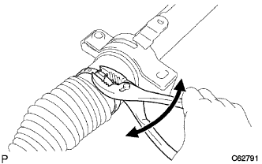 |
Remove the boot clamp No.2 from the rack boots No.2.
| 11. Steering rack boots clamp No.1 |
| 12. Steering rack boots No.2 |
Remove the steering rack boots No.2.
| 13. Steering rack boots No.1 |
Remove the No. 1 steering rack boots.
| 14. Steering rack housing bracket No.2 |
Mark the steering link asser and bracket No.2.
 |
Remove the bolt and remove the bracket No.2 and the No.2 grommet.
| 15. Steering rack end SUB-ASSY |
| 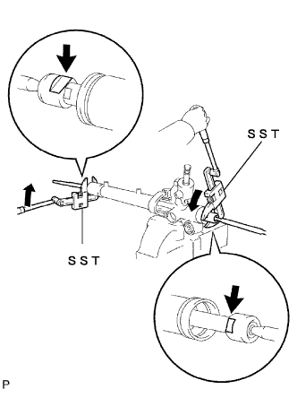 |
Use 2 SST to remove one rack end.
| 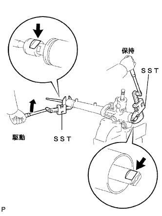 |
Attach the SST to the steering rack on the rack end side.
Use SST to remove the rack end.
| 16. Remove the power steering rack guide |
| 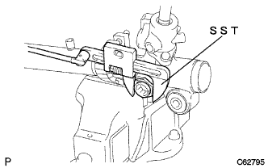 |
Use SST to remove the spring cap nut.
| 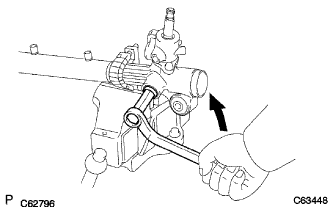 |
Use the straight hexagon wrench 19 to remove the spring cap.
Rack guide spring and rack guide spacer are removed from the rack housing.
Take off the rack guide.
| 17. Power steering control valve to be removed |
Mark the rack housing and control valve housing.
Remove the two bolts and remove the control valve ASSY from the rack housing.
 |
Remove the gasket from the rack housing.
| 18. Power steering control valve removed |
Wrap a protective tape around the Selation Department of the control valve.
| 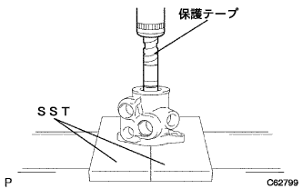 |
Use SST and press to remove the control valve.
| 19. Power steering control valve ring is removed |
Use a negative thin blade driver to remove the four control valve ring.
| 20. Power steering control valve bearing is removed |
 |
Use SST and press to remove control valve app oil seals and control valve apps.
| 21. The cylinder end stopper holes napping is removed |
Use the needle nose pliers to remove the hole napping ring.
| 22. Remove the cylinder end stopper |
Take off the cylinder end stopper.
| 23. Remove the power steering rack |
| 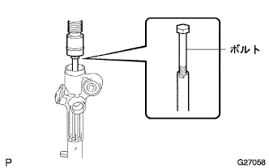 |
Use bolts and press to remove the steering rack and rackbush.
| 24. Power steering rackbush should be removed |
Remove the rackbush from the steering rack.
Use a negative thin blade driver to remove the O -ring.
| 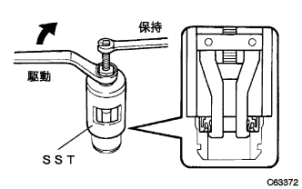 |
Use SST to remove the rackbush oil seal.
| 25. Racksea ring piston ring removed |
Use a negative thin blade driver to remove the piston ring and O -ring from the steering rack.
| 26. Power steering cylinder tube oil seal removed |
Use SST and press to push the cylinder tube oil seal.
| 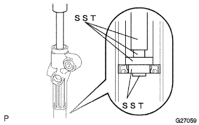 |
Use a brass bar and a hammer to hit the SST and remove the cylinder tube oil seal.